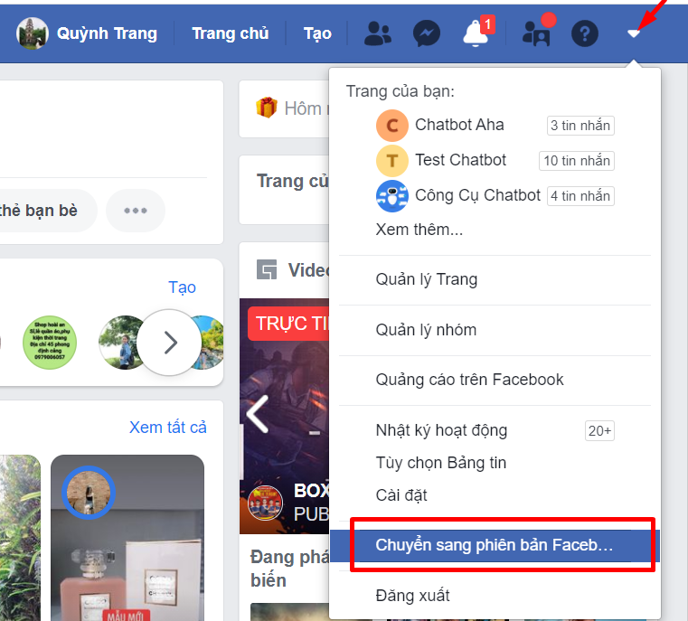
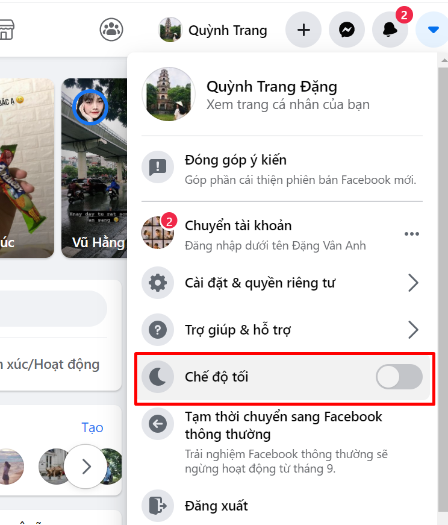
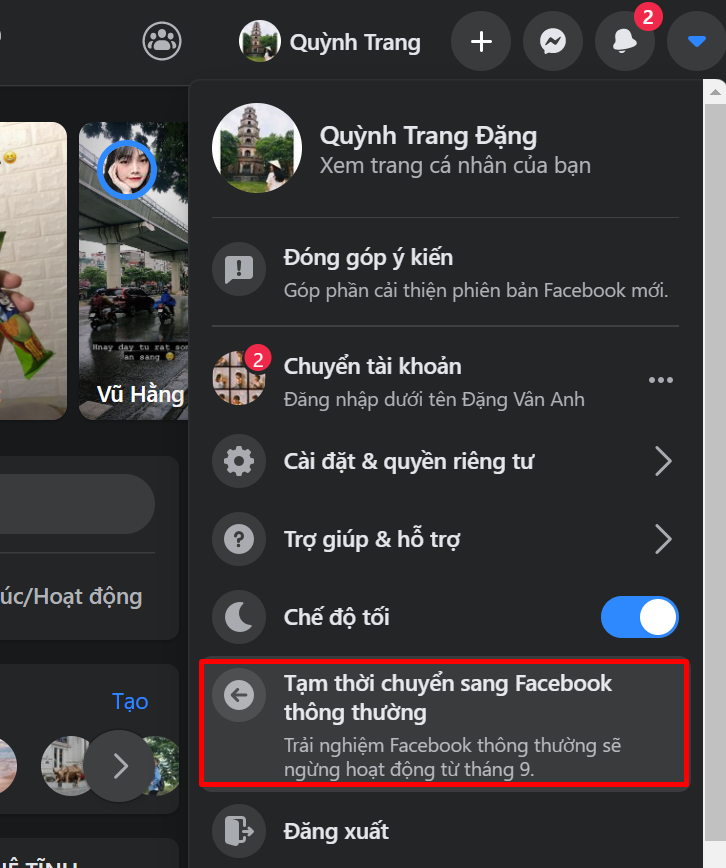

Cách bật chế độ Dark Mode Facebook trên điện thoại & máy tính

Ty Nguyen
CEO ❤️ AhaChat. Love babies & chatbot.
Trong thời gian gần đây, chắc hẳn bạn đã thấy những giao diện của Facebook ở một số tài khoản có màu tối khi dùng phiên bản Facebook mới và bật chế độ Dark Mode Facebook. Và bạn đang thắc mắc làm thế nào để bật được chế độ đó? Câu trả lời sẽ được giải đáp qua bài viết “Hướng dẫn bật chế độ Dark Mode Facebook” dưới đây, cùng theo dõi và trải nghiệm giao diện mới của Facebook nhé!
1. Chế độ Dark Mode Facebook là gì?
Chế độ Dark Mode Facebook là một giao diện Facebook mới với 2 màu đen và xám làm chủ đạo, thay thế cho giao diện trắng của facebook thông thường mà chúng ta thường thấy.
Khi bạn bật chế độ Dark Mode sẽ có một số lợi ích sau:
Sử dụng chế độ tối giúp người dùng giảm nguy cơ tiếp xúc với ánh sáng xanh - loại ánh sáng có hại đến mắt và giấc ngủ.
Màn hình tối giúp cho thiết bị tiêu hao ít năng lượng hơn, từ đó tiết kiệm pin và bảo vệ thiết bị.
2. Hướng dẫn bật chế độ Dark Mode Facebook trên máy tính
Để bật chế độ Dark Mode Facebook trên máy tính bạn làm theo các bước hướng dẫn sau:
Bước 1: Bạn cần truy cập vào website facebook.com trên trình duyệt web. Sau đó đăng nhập vào tài khoản Facebook cá nhân của bạn. Tại đây có 2 trường hợp có thể xảy ra:
Nếu giao diện Facebook của bạn chưa đổi sang phiên bản Facebook mới, thì trước hết bạn cần phải chuyển sang giao diện mới, mới có thể bật chế độ Dark Mode Facebook.
Tại giao diện trang chủ của tài khoản facebook, bạn bấm vào biểu tượng tam giác ngược như hình dưới để chuyển sang phiên bản Facebook mới.

Trường hợp nếu Facebook của bạn đã chuyển sang giao diện mới thì chuyển ngay sang bước 2.
Bước 2: Sau khi chuyển sang phiên bản Facebook mới, bạn tiếp tục click chuột vào biểu tượng tam giác ngược, bạn bật mục Chế độ tối.

Sau khi bạn bật chế độ tối lên, giao diện Facebook của bạn đã chuyển sang màu tối. Nếu bạn muốn trở về giao diện bình thường thì tắt chế độ tối đi là được. Còn nếu bạn không muốn dùng phiên bản Facebook mới, bạn bấm vào biểu tượng tam giác ngược rồi chuyển về phiên bản Facebook thông thường.

3. Hướng dẫn bật chế độ Dark Mode Facebook trên điện thoại
Ở thời điểm hiện tại, Facebook mới chỉ đang thử nghiệm phiên bản Facebook mới có chế độ Dark Mode trên trình duyệt web, còn ở ứng dụng Facebook trên điện thoại thì tính năng này chỉ khả dụng với một số người được thử nghiệm do Facebook lựa chọn ngẫu nhiên. Và cũng chưa có dấu hiệu công bố rộng rãi tính năng này trên điện thoại.
Hy vọng với những thông tin được chia sẻ trên đây đã giúp bạn hiểu thêm về chế độ Dark Mode Facebook cũng như biết cách bật chế độ Dark Mode. Nếu bạn có bất kỳ thắc mắc gì thì đừng quên để lại câu hỏi ngay mục bình luận dưới đây, chúng tôi sẽ phản hồi sớm nhất cho bạn. Cảm ơn bạn đã theo dõi bài viết, chúc bạn thực hiện thành công!